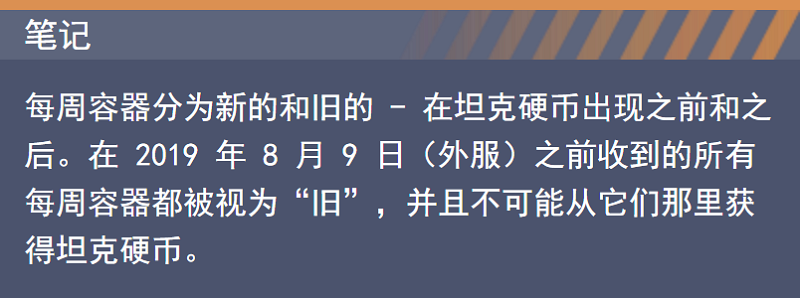
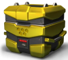

一般信息
坦克硬币是游戏的次要货币，主要用于在商店内购买物品。
它们是真钱和游戏内容之间的桥梁。坦克币可以从商店购买。
军团通行证、迷彩、金箱子、产品套件、水晶和各种礼盒都可以用坦克币购买。
唯一不能用坦克币购买的商店物品是坦克币本身、
微升级以说及车库中的所有物品（除了一些迷彩和装备改造）。
在大厅的右上角，您可以看到您目前拥有的坦克币数量
例如，您需要 2 000 个坦克币才能购买“干旱”迷彩
在您确认购买后，您将被收取所需数量的坦克硬币，并且所选商品将被添加到您的帐户中。
如何获得坦克币
坦克币可以通过多种方式获得。
商店
获得坦克币最简单、最快捷的方法是从商店购买
每周任务礼盒
每个新的每周礼盒都会掉落x8坦克币。这个数量对于所有等级都是恒定的。
硬币箱
硬币箱是一种特殊类型的礼盒，主要包含坦克币作为奖励

星级挑战
坦克币也可以从星级挑战中获得。
在每一期挑战的49阶，有 100 个白银级坦克币，可以免费获得。
完成挑战就是您所要做的！
通过兑换码
坦克硬币可从兑换码中获得。兑换码可以通过不同的方式获得。
比赛和活动
管理部门定期组织竞赛和活动，您可以参加并赢取奖品。关注新闻！
特殊任务
过去，在庆祝活动期间有几个特殊任务奖励了坦克硬币。
密切关注主页，了解 Tanki Online 中当前事件的详细信息！
坦克硬币的历史
为什么我们需要一种新货币？
Tanki Online 已经存在 10 年了。在那段时间里，我们只有一种货币——水晶。
一开始，你可以用水晶购买任何东西。
你可以在游戏中赚取它们，如果你想要更多，你也可以用真钱购买它们。
随着时间的推移，我们添加了独家项目。
这些物品只能用真钱购买，有时会显示为活动奖品。
我们仍然保留了一个重要原则——如果一个项目影响了游戏玩法，你应该能够通过玩来获得它。
但是一些特殊的物品，如新的迷彩、皮肤和幸运礼盒，
打破了“你可以得到任何物品而无需支付真金白银”的概念。
因此，我们创建了挑战赛，让玩家可以通过游戏获得独家内容。但这只是部分解决方案。
移动版的发布带来了另一个障碍——商店折扣是不可能的。
移动玩家显然对此感到不满。但这是谷歌的政策，我们必须坚持。
幸运的是，有一个解决方案。
它将被称为……坦克硬币！
有趣的事实
坦克硬币于 2019 年 8 月 2 日出现在外服。
硬币于 2020 年 4 月 4 日出现在国服
2019 年 9 月的星级挑战是第一个以高级货币为特色的挑战赛
坦克 1.0是第一个可与坦克硬币一起购买的迷彩。
它卖了 10 坦克硬币并且是坦克战争的一部分。
从 TankiSport 第 3 季开始，就有一个名为“eSports Tanki Fund”的活动。该赛事在每个赛季的季后赛阶段进行。在这种情况下，坦克硬币被收集到一个大基金中。玩家可以通过从商店购买套件来增加资金。在活动结束时，坦克硬币被分配给参与者。除此之外，本次活动还可以获得更多奖品，比如超级礼盒、皮肤礼盒，甚至还有专属的危机无人机！